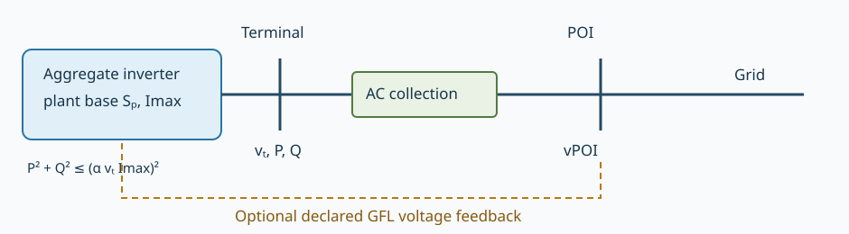

Static inverter capability and control
Main study: fixed-frequency Q–V design
Use qv_inverter for new aggregate GFL/GFM Q–V studies. It constructs a StaticInverter with frequency_response=false, Volt/VAR control and a configurable q_cap_fraction=0.395. BESS uses either mode and a source P box that permits charging; this controller does not add SOC/energy constraints.
plant = qv_inverter(generator_id=2, terminal_bus=2, mode=:gfm,
priority=:active, base_mva=50.0, terminal_base_kv=20.0,
s_max=1.0, i_max=1.1, p_available=0.9, p_ref=0.8,
q_ref=0.0, v_ref=1.0, q_droop=0.05,
reactive_available=true, frequency_hz=50.0, q_cap_fraction=0.395)
result = solve_inverter_opf(case, [plant])
report = validate_inverter_opf(case, result)The symmetric cap is ±q_cap_fraction times the effective apparent rating (the tighter of declared plant and generator ratings). It intersects supplied asymmetric Q bounds and current/apparent capability; it never widens them. It is a ceiling, not reserved Q headroom. Active priority can reduce Q below this cap; reactive priority can curtail P. A GFM label alone adds no dynamic forming guarantee. Identical terminal laws have identical static behavior.
Frequency is prescribed in this main study. Existing network active balancing policies are not reinterpreted as frequency in Hz. Independent replay still checks controller equilibrium, AC balance and physical limits. Q–V tracing in DroopDesign should consume the same declared limits and frozen controllers.
Keep physical collector/transformer impedances in the network. Separate LCL, PLL and inner-loop models are not required by this terminal representation. Internal-voltage droop or virtual impedance requires a justified equivalent or the optional voltage-source model; deleting impedance is not an equivalence proof. RAW Q bounds are retained; MBASE is not automatically a capability rating, and source impedance is not automatically virtual impedance. Ratings and controller measurement locations require explicit declarations.
Side study: frequency-aware Q–V design
Common-frequency, P–f response and voltage-source GFM models remain available for the separate frequency-aware Q–V design study. Existing direct StaticInverter construction retains its original behavior: GFM frequency response enabled and q_cap_fraction=1.0 (no extra restriction beyond its apparent circle). The response flag and cap are serialized in new results. Existing sealed evidence is unchanged; no historical campaign is reclassified. Run julia --project=. examples/fixed_frequency_qv.jl for a synthetic example.
An inverter's current rating limits its deliverable power more tightly when terminal voltage falls. The static plant model connects this limit to explicit active/reactive priority and a declared command law. It uses the existing AC network equations and preserves the original equipment and operating limits.

Scope and required data
StaticInverter associates one aggregate plant with one existing Generator. Declare the generator ID, terminal bus, point of interconnection (POI), control mode, priority, plant MVA base, terminal line-to-line kV base, current limit, apparent-power limit, available active power, P/Q references, voltage reference, droop slopes, reference frequency and reactive availability. These inputs are study declarations, not inferred manufacturer capabilities. No RAW technology label or GFM label supplies missing ratings or changes a controller automatically.
The terminal is the generator's injection bus. The POI is a distinct identity; collector lines, transformers, losses and shunts must be present in the network when needed. Naming a POI neither creates that network nor measures POI power. GFL voltage control may sense another declared bus, including the POI. This GFM surrogate requires terminal-local Q/V droop. All named buses must be connected through available branches. The network does not store nominal kV: the caller must establish that terminal_base_kv matches the terminal voltage base.
Bases, signs and capability
Let $S_b$ be the case system MVA base and $S_p$ the plant MVA base. Lowercase $p,q$ below are plant-base active/reactive injections; $P,Q$ are system-base injections into the network. Positive $q$ supplies reactive power. Define
\[\alpha=\frac{S_p}{S_b},\qquad P=\alpha p,\quad Q=\alpha q, \qquad I_b=\frac{S_p}{\sqrt{3}V_b}\;\mathrm{kA}.\]
$V_b$ is the declared terminal line-to-line base in kV. $v_t>0$ is terminal voltage magnitude in pu on that base. With the voltage phasor as reference, $i_p=p/v_t$ and $i_q=q/v_t$; the complex injected current is $i_p-\mathrm{j}i_q$. Its magnitude is $\sqrt{p^2+q^2}/v_t$.
The supplied generator box, converted to plant base, is intersected with available production $p_{\rm av}\geq0$. Reactive availability is a separate Boolean declaration:
\[\ell_p=\frac{P_{\min}}{\alpha},\quad u_p=\min\left(\frac{P_{\max}}{\alpha},p_{\rm av}\right),\qquad [\ell_q,u_q]= \begin{cases} [Q_{\min}/\alpha,Q_{\max}/\alpha],&\text{reactive available},\\ [0,0],&\text{otherwise}. \end{cases}\]
The Q interval above is additionally intersected with $[-\kappa_Q s,\kappa_Q s]$, where q_cap_fraction supplies $\kappa_Q$ and $s$ is the effective apparent rating defined below.
Both source P and Q intervals must contain zero. Positive minimum generation or mandatory nonzero Q is rejected, not relaxed: those cases require a commitment model. Negative P is supported when the source box permits charging, but no energy-storage state or energy budget is modeled. $p_{\rm av}$ bounds positive production; it is not a charging-energy constraint.
Let $s_p>0$ and $i_{\max}>0$ be declared plant apparent/current limits. If the generator also has a supplied system-base apparent rating $S_g$, define $s=\min(s_p,S_g/\alpha)$; otherwise $s=s_p$. Then
\[c(v_t)=\min(s,v_t i_{\max}),\qquad p^2+q^2\le s^2,\qquad p^2+q^2\le v_t^2i_{\max}^2.\]
The sequential command projection below enforces these two circles together with the box. At zero active availability, reactive output remains possible only when explicitly declared available. If either the source generator or plant is unavailable, $P=Q=0$. Availability never changes automatically at a voltage or frequency threshold.
Command equations
Let $p_0,q_0$ be supplied plant-base power references and $f$ a supplied steady-state system frequency in Hz. The active request is
\[p^*=\begin{cases} p_0,&\text{frequency response disabled},\\ p_0+(f_0-f)/m_p,&\text{frequency response enabled}, \end{cases}\]
where $f_0>0$ is reference frequency and $m_p>0$ is P/f droop in Hz per plant-pu active power. solve_inverter_opf takes frequency as a fixed study input. solve_common_frequency instead solves it jointly with AC balance under the complete response contract in the frequency-aware side study. Neither changes SCOPF participation.
For fixed Q, $q^*=q_0$. For Volt/VAR, let $v_r$ be the sensed voltage, $v_0>0$ its reference, $d\geq0$ the symmetric deadband half-width and $n_q>0$ the slope in voltage pu per plant-pu Q. Then
\[q^*=q_0+\frac{[v_0-d-v_r]_+-[v_r-v_0-d]_+}{n_q}, \qquad [x]_+=\max(x,0).\]
Without deadband or limiting, local Q–V control gives $v_t=v_0-n_q(q-q_0)$. Only when frequency response is enabled does $f=f_0-m_p(p-p_0)$ also apply. When limiting acts, the command is curtailed rather than imposing an impossible voltage/frequency equality. GFL may also use Volt/VAR: identical equilibrium curves do not imply identical dynamic behavior.
Priority and saturation
Define $\operatorname{clip}(x;a,b)=\min(b,\max(a,x))$ and $c=c(v_t)$. For active priority:
\[p=\operatorname{clip}(p^*;\max(\ell_p,-c),\min(u_p,c)),\qquad h_q=\sqrt{\max(c^2-p^2,0)},\]
\[q=\operatorname{clip}(q^*;\max(\ell_q,-h_q),\min(u_q,h_q)).\]
For reactive priority:
\[q=\operatorname{clip}(q^*;\max(\ell_q,-c),\min(u_q,c)),\qquad h_p=\sqrt{\max(c^2-q^2,0)},\]
\[p=\operatorname{clip}(p^*;\max(\ell_p,-h_p),\min(u_p,h_p)).\]
Priority applies only after the prioritized request's own equipment bounds. For example, at $v_t=i_{\max}=1$, requests $p^*=q^*=0.8$ give $(p,q)=(0.8,0.6)$ for active priority and $(0.6,0.8)$ for reactive priority.
The JuMP model adds the projected P/Q equalities to the native AC formulation; it does not smooth the priority corners. Square-root radicands use a $10^{-24}$ floor to keep intermediate-iterate derivatives finite. Independent replay uses zero and checks the original circles and commands. This numerical guard is not an extra current allowance. Piecewise corners can impair local NLP convergence; a failed solve is not proof of infeasibility.
Solve and verify
plant = StaticInverter(
generator_id=2, terminal_bus=2, poi_bus=1,
mode=:gfl, priority=:active, q_control=:fixed_q,
base_mva=50.0, terminal_base_kv=20.0,
i_max=1.0, s_max=1.2, p_available=1.0,
p_ref=0.8, q_ref=0.2,
v_ref=1.0, q_droop=0.05, f_ref_hz=50.0, p_droop_hz=2.5,
reactive_available=true,
)
# case must contain generator 2 at bus 2, with explicit source bounds.
result = solve_inverter_opf(case, [plant])
report = validate_inverter_opf(case, result)
report.valid || error("static inverter OPF did not qualify")
point = materialize_operating_point(case, result)All numbers above are illustrative assumptions. q_droop is unused for fixed-Q control, and f_ref_hz/p_droop_hz are unused for GFL; they do not activate an additional controller. inverter_response evaluates a supplied terminal/sensed voltage. validate_static_inverters replays supplied states without repair. add_static_inverter_constraints! supports composition with explicit AC variables; its caller must prevent any other controller from owning the same injection. The wrapper rejects existing droop attachments on inverter generators. Other generators retain their ordinary AC OPF behavior.
A valid result requires native convergence, independent AC equilibrium and original network-limit checks, and inverter-law replay. Ordinary AC validation alone does not check the added inverter commands. Materialization retains controller declarations and frequency in source context. model_data(plant) serializes all settings; the existing Study/RAW formats do not acquire an implicit inverter model or an automatic controller reconstruction.
Frequency-aware side study
See Frequency-aware Q–V design for common-frequency solves, complete response ownership and their separate validation contract.
Verification and limits
The focused unit suite checks hand-computed P/Q priority, both power signs, base invariance in physical MW/MVAr, declining-voltage current capability, apparent-rating intersection, zero-output and unavailable states, deadband and frequency response, identity/input rejection, and corrupted-witness rejection. Two-bus AC tests cover both control modes, saturation and standby, with separate complex-current calculation and native independent AC replay. See the runnable examples/static_inverter.jl example and test/test_static_inverters.jl. test/test_common_frequency.jl adds analytical frequency and saturation cases, AC-loss coupling, outages, bounds, ownership and corrupted-frequency checks.
This is a static terminal-injection surrogate. It does not include an internal voltage source behind filter impedance, PLL, inner loops, virtual inertia, DC-link/energy state, protection, ride-through, transient synchronization or small-signal stability. GFM voltage-forming performance needs a compatible dynamic realization and external validation. No automatic integration into SCOPF response, shared inverter-reference optimization, multi-period storage dispatch or RAW controller import is claimed. Those require explicit policy and result contracts.
The source references explain the choice of modeling ingredients, not validation of this implementation: WECC's generic PV specification describes selectable active/reactive current priority and plant control; PNNL's GFM modeling study distinguishes droop, equivalent voltage-source and limiting models. This API implements only the explicitly stated static equations above.